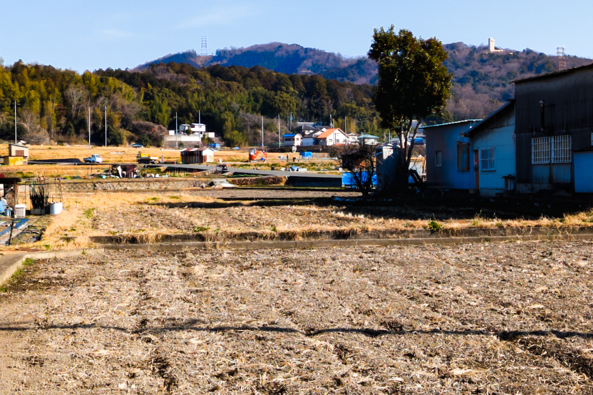
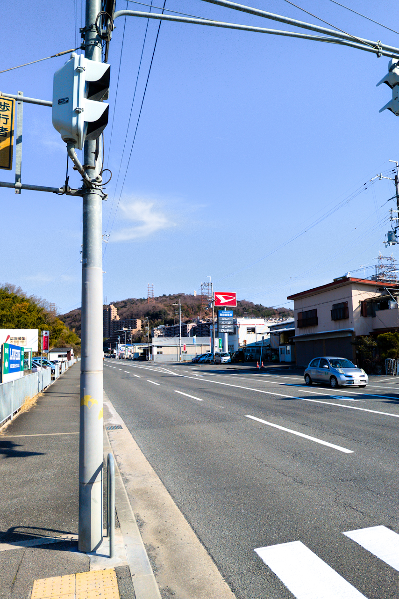
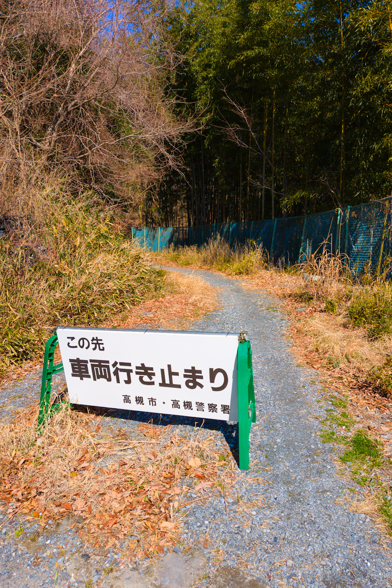
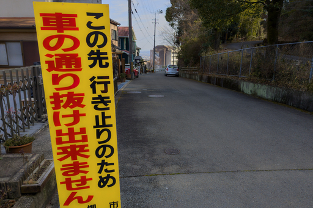
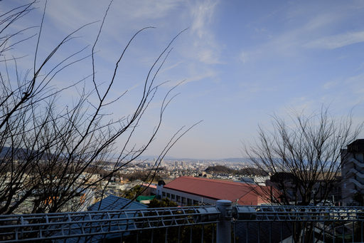
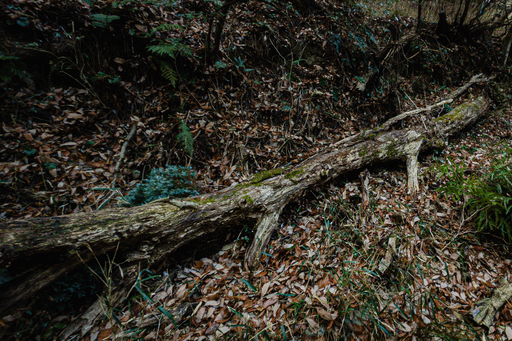
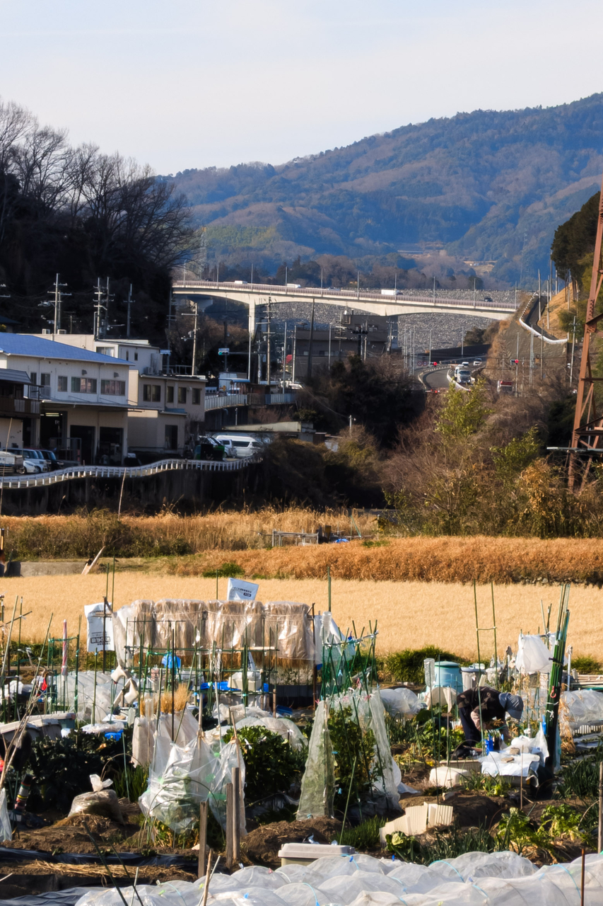
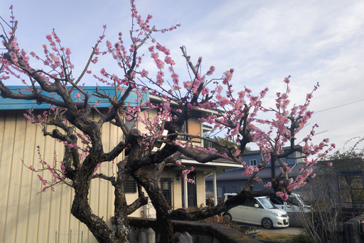

03 月 10 日 ( 月 )
今日の通所
本日も病院デイケアまでの 6.2km の徒歩通所を敢行した。道中目にした野鳥は以下の通り。
- アオサギ
- イソヒヨドリ
- カルガモ
- カワセミ (声のみ)
- キンクロハジロ
- コサギ
- スズメ
- ダイサギ
- トビ
- ハクセキレイ
- ハシブトガラス
- ハシボソガラス
- ヒドリガモ
- ヒヨドリ
- メジロ
- 雌ジョウビタキ
以下は道中撮影した画像。

この辺りまでくるとデイケアをサボって安威川ダムに向かおうかという誘惑が発生する。

この道路を北に進めば安威川ダムに着く。地図から考えて徒歩 40 分くらいだろうか？

とある山間部の入口。山間部と言っても 100m 程度。
ここより帰宅時。

徒歩だし気にせず進むわけですが。

すこし霞んでいるけど良い眺望。

Dinosaur

実は帰り道、ダムが見えるんです
歴史ある集落内でしか得られない栄養がある。
歴史ある集落内でしか得られない栄養がある。

なんだかんだで春ですね。